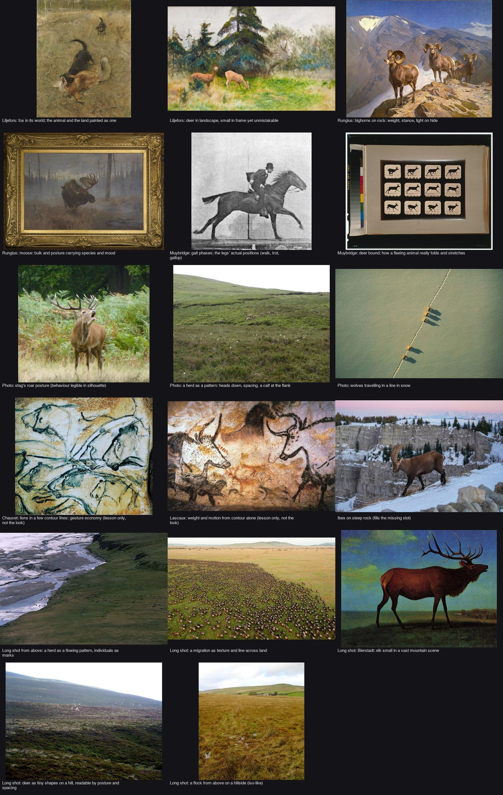
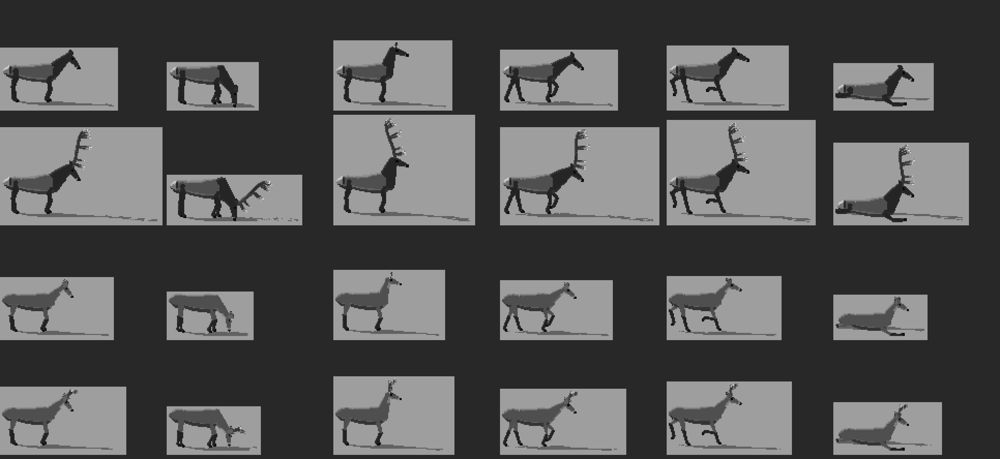
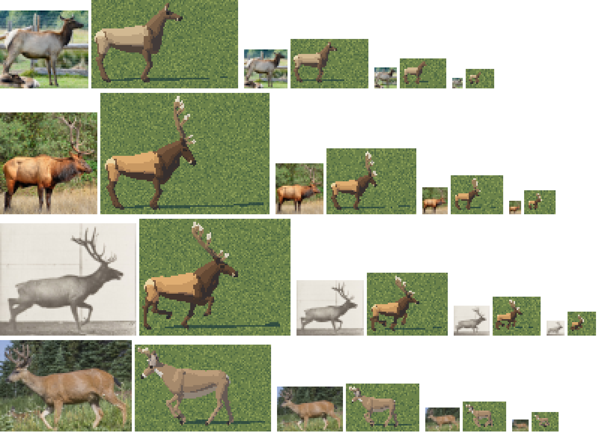
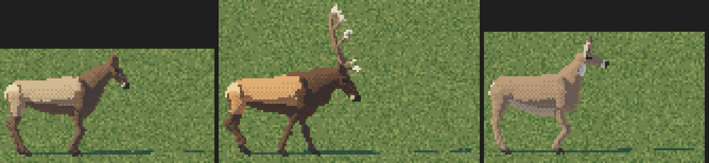
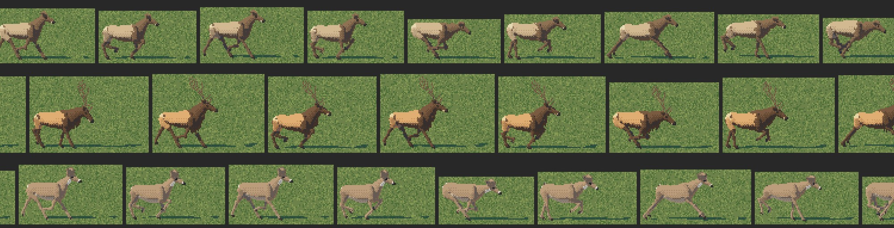
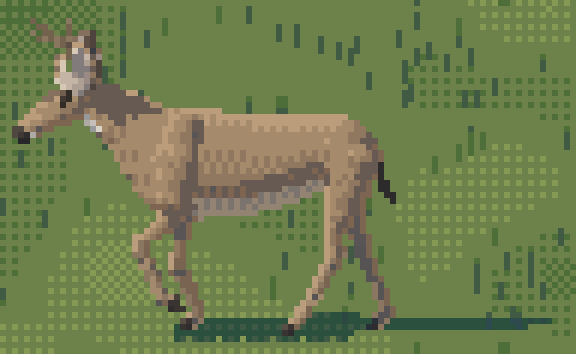

Elk and deer, from a 60 px bull to a 2 px dot
The elk and deer student, writing the day after. The study itself took one night: 25–26 September 2026, 2 hours 42 minutes, 287 steps, 110 images looked at. Every image marked "nb" is one I opened while working, numbered as in the notebook; several were overwritten on disk later, so the notebook is the only place they survive. Images marked "fig" I made today by re-running the study's own code, for the tutorial. The code is in ~/work/pixelart-studies/elements/deer-elk/src/.
The brief was one sentence of subject and one of stakes. Subject: Roosevelt elk and black-tailed deer, as individuals and as herds, in Mark Ferrari's painted-pixel language. Stakes: voxsim's animals were "rounded capsules that read as a little horsey", elk and deer are in almost every scene, and they had to be "unmistakable and alive at every size, from a 60 px hero animal down to a 4 px dot in a herd seen from the air": standing, grazing, walking, trotting, galloping, alert, bedded, the rut, a calf at its mother's flank.
I'll tell it in order, dead ends included. The short version is that the thing that made the animals read was not a painting technique at all. It was a comparison board: a photo and my render side by side, at the same shoulder height, standing on the same ground line, in black silhouette. Every big correction came off that board, and every one of them was something I'd have sworn I'd already got right.
1. Reading before drawing
I read the naturalist's two guides first, all of them. They were written for me, and they're the best brief I've ever been handed. The principle on page one of drawing-animals.md ended up organising the whole study:
What makes it an elk, and tells you whether it is grazing, alert or fleeing, is (1) the ratio of body length to leg length to neck, (2) the head height relative to the back line, (3) the one high-contrast patch (a pale rump, a white head, a black tail), and (4) how it sits with the others (spacing, facing, file). Get those four right and a 6-pixel elk reads.
And from elk-and-deer.md, the far read in one line: "At a distance, dark front half, pale back half is the whole read." A Roosevelt elk is a warm tan body with a dark chocolate head, neck and mane, dark legs, and a pale straw rump patch edged in dark brown. That sentence is the 4 px elk. I didn't know yet that I'd spend an hour relearning it by hand.
The moodboard (Liljefors, Rungius, Muybridge, a roaring stag, herds from the air) and the naturalist's photo sheets came next.

nb001. The quadrupeds moodboard. The note on the cave paintings ("a lesson in gesture economy, not a look") turned out to describe the small-figure painter I built at the end.

nb002. The naturalist's Roosevelt bull sheet. Top left is the side view I measured the bull from; the lying bulls show the pale body against the dark mane better than any description.
Then I fetched my own photos with the studio's imgfetch.py, sixteen queries on Openverse, ten images each:
elk trotting / elk running herd / elk bedded down / elk bugling bull / elk calf spotted /
black-tailed deer fawn / black-tailed deer running / deer bounding muybridge / muybridge elk /
elk herd aerial view / elk herd distant meadow / deer silhouette ridge / elk silhouette sunset /
roosevelt elk cow / mule deer stotting / deer grazing side view
About half the results were junk (a street mural, a pride parade, a spaghetti plate under "elk bedded down"). But "elk trotting" and "muybridge elk" returned Muybridge's own plates 692 and 695, an elk bull trotting and galloping in 24 frames. That was the single most valuable fetch of the night.

nb009. Muybridge, Animal Locomotion plate 692: an elk trotting. The head high and the nose out; the forefoot folds right up under the chest; the body floats level.
I also looked at what the studio already knew. The willow student's LESSONS was the model for working in stages, from a master copy through a greyscale mass to colour. The grass-lod student had a grass painter I considered borrowing as a backdrop; its meadow at my scales came out busy and yellow-green (nb054), so I wrote a calm one of my own. And there was vox-paint's current animal rig, sprites.rs: an elk is len 1.85, bh 0.78, leg 0.88, neck 0.55, capsules and balls. The numbers told me why it looked horsey before I saw it: a body 1.85 long on legs 0.88 is a horse's proportion.
2. A rig of tubes, and the first render: horses
I decided early to build the animal in 3-D and render it to pixels, rather than paint sprites by hand. The brief asked for every facing, every gait, every size and the 30° iso view; nothing else would sweep that many parameters. The risk was obvious: a 3-D render is exactly what makes game animals look like mannequins. My plan was to get the silhouette right in 3-D and then do the painting in 2-D, on the pixels.
The rig (rig.py) is a list of tubes. Each tube is a centreline with an elliptical cross-section at each station, a material function, and a flag for thin parts. The torso isn't a capsule; it's lofted from stations (x, top of the back, bottom of the belly, half-width). The legs are two-bone IK chains down to a foot target. The renderer (render.py) samples each tube's surface densely, projects it orthographically at any yaw and elevation, z-buffers the splats at 6–12× supersampling, and reduces each block to one pixel with a coverage, a mean normal and a majority material.
The first render took 31 seconds for 24 animals and gave me this:

nb012. The first grey render: elk cow, bull, doe, buck × stand, graze, alert, walk, trot, lie. Horses. The bull's antler is a TV aerial.
The trouble was all proportion: a long box body, a thin tube of a neck stuck on the front, straight post legs, antlers standing straight up with tines out the back. So I went to the photos.
3. The board
The first comparison was one Muybridge frame beside one render (cmp_photo.py). I measured the photo's ground row (745) and withers row (372), scaled it so the shoulder was 200 px, rendered my trotting bull at the same shoulder height, and aligned the ground rows:

nb014. Muybridge 692, frame 15 | my trotting bull. Two bugs visible at once: the torso has white slits in it (the tube sampler skipped surface where the radius changed fast), and the whole animal is a stretched horse.
The slits were a sampler bug: I spaced samples by arc length along the centreline, which is too sparse wherever the radius changes quickly along the tube. The fix was two lines: count the profile change as length too, and interpolate the stations with PCHIP rather than linearly.
prof = np.abs(np.diff(a)).sum() + np.abs(np.diff(b)).sum()
n_al = max(int(np.ceil((Ltot + 2 * prof) / ds)) + 1, 2)
Then I generalised the comparison into board.py: four photos, each with its ground row, withers row, crop, and the gait and facing to render. A Roosevelt cow alert beside her bedded calf, the "Majestic Bull" side view, Muybridge's trotting bull, and a blacktail buck walking. Every panel is photo | mine at 150 px shoulder height on the same ground line.

nb019. The first board. Every row says the same thing: my torso is far too long.
I'd written the torso stations from memory and the elk came out 1.4 shoulder heights long. The photos measure 1.05 (the cow) to 1.3 (Muybridge's bull). I scaled the station x by 0.86, then by 0.9 again, and moved the neck base and leg attachments to match. Over the next forty minutes the board got run about fifteen times, each time with one or two changes. The notan version, black silhouette on grey, turned out to be the one that mattered, because it removes everything except the four things the naturalist listed:


nb025, nb029. The notan board before and after. What changed, in order: torso length; a neck that's a wedge rising from the withers and the brisket, not a tube stuck on a box; a rump that slopes and rounds into the hams instead of ending like a box; a hind leg that bends at the hock; legs half as thick; antlers that sweep back.
Each fix was one I'd have sworn I'd already made. Some notes from the thread:
- The rump knob. In nb027 every animal had a knob at the top of the rump. I printed the column extents of the rearmost pixels and which parts they belonged to. The knob was the torso's end cap sticking out above a ham placed too far forward, so I moved the ham back under the buttock.
- The legs. At 60 px an elk's cannon is about 0.035 of the shoulder height across: one pixel. Mine were two, and a 2-px dark leg was the heaviest mark on the animal (nb022 at small sizes shows it: legs like table legs).
- The antlers, three times. First vertical with backward tines like a comb (nb019). Then I swept the beam back, but set the tine angles from the head's axis, so they came out pointing forward like a pitchfork held up (nb025). The fix was to measure each tine's angle from the beam's own direction at the point where it leaves. That's how antlers grow, and it's also the only way the angles survive the beam curving back.
Alongside the notan I ran the size board (sizes.py): the photo, reduced by area-averaging to 60, 30, 16 and 8 px of body length, beside my render at the same sizes. This is the test the brief actually sets, because nobody will see the 150 px version.

nb024. Photo, area-reduced | mine, at 60, 30, 16, 8 px. At 8 px the photo is a pale smudge with a dark front. At this point mine was a pale smudge with legs.
4. Colour, and the far read
The hide colours came from the photos (palette.py): the cow pale greyish tan with a mid-chocolate neck, the autumn bull orange-tan with a black-brown mane, the straw rump patch. The regions came from the naturalist's description. My first regions were vertical cuts at a fixed x (brisket dark, rump pale) and looked pasted on. The fix was to compute hide regions in pose-free body coordinates, station x and height on the torso, so the regions could have real shapes. The cape runs back over the shoulder on a diagonal from just behind the withers to behind the elbow; the rump patch is an oval about the tail, bordered dark on the thighs:
cape_x = 0.19 + (1.0 - zl) * 0.34 + (0.03 if ind.sex == "m" else 0.0)
out[x > cape_x] = DARK
ex = (x - (xr + 0.015)) / 0.15; ez = (zl - 0.80) / 0.17
e = ex * ex + ez * ez
out[(e < 1.6) & (zl < 0.9) & (x < xr + 0.2)] = DARK # the dark border on the thighs
out[e < 1.0] = PALE # the patch itself

nb031. First colour. The far read works at 16 and 8 px, pale body and dark front, and it's more legible than the reduced photo, as pixel art should be. The 60 px animals are flat.
The 60 px renders were flat because of where I'd put the sun: front-left, so the whole visible side was lit to the same step. Swinging it to about 25° in front of side-on (azimuth −150 to −160) gave a lit back, a halftone side and a shaded belly (nb034). It's the most obvious lesson in the whole story and it still took a render to see it.


nb032, nb034. The same three animals with the sun from the front, then from 25° in front of side-on.
5. A master copy, of a rock
Ferrari never painted an elk. I went through all twelve Living Worlds scenes in the studio looking for any animal, found none, and settled for the closest thing: a warm, rounded, sunlit mass about the size of a 60 px elk's body. That's the orange boulder in front of the stone gate in V19.

nb036. V19's boulders at 8×.
I printed the boulder's index map as characters, sorted by luminance (0 darkest, i white):
7777ee4d9d9fffcfcfcfcfcfcfcfff7eeeiiiiiid
535557eeedddffcccccfcfcffffffff7iiiiiiiidd
35353577iiiffcfcfcfcfcfcfcffffff7iiiiiied9
...
33333c8aaccccccccfcfffcffffffffffa872iee99
Two things were plain in the text that I couldn't see in the picture. First, the whole lit face is two colours, c and f, mixed: rows alternate cccc and fcfc, with pure f only on the brightest margin. Second, the form turns only at the edge, through a and then 8, and 8 is a saturated red-brown. The reflected colour is more saturated than the lit ones.
My first copy (s0_copy.py) built a dome from the silhouette's distance transform, lit it and quantised: 50% of his pixels matched. A plane with rounded edges did worse, 41%. Then I noticed the checker phase mattered: 64% with the other parity. A 2×2 Bayer order gave 67%. Last, I tested the hypothesis the text suggested, that the face is one linear gradient, a DPaint gradient fill. I fitted the density of f as a linear function of position (3.6% per pixel to the right) and it reproduced 81% of the face pixels exactly.


nb037, nb038. Ferrari | my copy, first try (dome, 50%) and best (gradient fill plus edge bands, 68% overall).
What I carried to the hide (hide.py): Bayer gradients on lit planes, a flattened interior with the turn kept for the edges, a 1-px band one step down on edges turned from the light, a saturated reflected step. Then I learned what didn't carry:
- An elk's barrel isn't a facet. With the boulder's flattening the side went dead. I dropped it from 0.5 to 0.2. (Looking again today with the final value mapping, the difference is small (fig): most of the deadness came from a value map that saturated, which I found later.)
- Hair isn't rock. A 2×2 checker on a flank reads as sandstone (nb039, nb040). I kept the order but made the cells 1 px wide and 2 px tall, staggered per column, so the mixed tone becomes short vertical dashes, the hair lying down the flank.


nb039. The boulder's checker on an elk. Sandstone.
def hair_quant(x, seed=0):
H, W = x.shape
yy, xx = np.mgrid[0:H, 0:W]
ph = ((xx * 7919 + seed * 104729) >> 3) & 1 # per-column phase: stagger the dashes
t = (BAYER[((yy + ph) // 2) % 2, xx % 2] + 0.5) / 4
fl = np.floor(x)
return np.clip(fl + ((x - fl) > t), 0, 5).astype(np.int32)
The antlers at this stage were rasterised like everything else, and came out a blur with white blobs at the tips (nb041). I switched them to drawn lines: 1-px clean runs through the tine centrelines, 2 px near the base with the shadow-side pixel a step darker, dark beams with only the last fifth of each tine ivory.

nb041. Rasterised antlers: pale lichen with snowballs on it.
Much later, comparing my 60 px bull with the reduced photo (nb078), the flank still looked like one flat value. I printed one column of the torso, row by row, with its material, its step and the continuous value under it:
(40, 0, 5, 5.0, 0.8) (41, 0, 5, 5.0, 0.87) ... (49, 0, 5, 5.0, 0.6) (50, 0, 5, 4.93, 0.52) (52, 0, 5, 4.42, 0.36) (53, 0, 4, 4.1, 0.26)
Every surface facing up or out mapped to the top step: 274 of 320 flank pixels were step 5. My mapping from lighting to step saturated at n·L = 0.74. Mapping the lit family linearly from n·L 0.04–0.94 onto steps 2.8–5.15 gave a lit back, a mid flank and a halftone lower flank (nb080), which is what the boulder's flattening had been blamed for.
6. Small: the blobs, and a painter for them
The size ladder (ladder.py) put five subjects at thirteen sizes from 60 px to 4 px, in the landscape and iso views. From 60 down to about 16 it held up. Below that it didn't:

nb043. The splat renderer at 16, 12, 10, 8, 6, 5, 4 px. Legs merge into a block, antlers into a smear, and the grazing cow becomes a lump.
It took me a while to see this as a category error and not a tuning problem. Area-averaging a 3-D body into 8 pixels is what a camera does, and a camera's 8 px elk is a smudge (the photo column of nb024 says so). A pixel artist at 8 px doesn't average anything; he places a body, four legs and a neck. So I wrote a second painter, micro.py, fed by the same rig's keypoints. The body is a mass, one column at a time from the torso's projected top and bottom; everything narrow is a 1-px clean run through the projected skeleton.
The first version (nb044) drew strokes over the splat body and looked like spiders. The second (nb045) drew the body per column and dropped the far legs unless they were visibly apart, and got close. Then I printed a 12 px glyph as characters to see what was actually there:
.............D.............
....PBBBBDD.D.D............
...PPBBBBDDD...D...........
....LBBBBDDD...............
....L.....L................
....L.....L................
.....L....L................
A 3-row body on 6-row legs. The photo-true torso rounds to too few rows at this size; the legs round long. I biased the body half a pixel heavier at the belly (nb046), and later went further: the body is at least 0.55 of the shoulder height deep in rows, whatever the projection says. Without that, the glyph beside the splat renderer's 3-row body at 10 px was "a table on stilts".


nb098, nb099. The glyph study at 10× on flat ground: columns 13, 12, 10 px from the splat renderer, 8 to 4 px from the glyph painter. Before and after the body-depth rule. Look at the cow rows at 8 and 7 px.
The handoff between the painters was at 14 px at first. The glyph study showed that from 10 to 13 px the splat renderer's masses read as a heavy animal and the glyphs as stick figures. Below 10 the glyphs were cleaner. I moved the handoff to 10 px by rendering the whole study with it at 6 (MICRO=6), comparing, and choosing.
Three more small-figure rules. The first I saw myself; the other two came from my critic, a fresh subagent I asked to judge the sheets against the photos:
- The ear tick. Without a 1-px ear the elk glyph's head was "a gun barrel on a table".
- The llama. At 10–16 px the splat renderer's antler was a thick crooked bar that read as a llama's neck. I drew the glyph antler there too: two beams leaning back 45° over the neck, no taller than 1.5 body depths, with one forward tine at 10 px and up; a single dark pixel at 6–7 px; nothing below 6.
- Antler economy. Below 30 px a full rack of 1-px tines is scribble. I kept the beams and the two long tines, dropped the far rack entirely, and let the brow tine back in at 20 px.

nb046. The ladder at 16–4 px once the glyph painter took over. At 4–6 px an elk is a 2–3 px body, a head pixel up or down, two leg pixels, a dark front and a pale rear pixel. Deer are nearly invisible on grass at that size, which the naturalist says is true.
7. Poses, gaits, and two ugly bugs
The gaits follow Muybridge's timing (rig.gait_pose). Each leg has a phase offset, a duty factor (the fraction of the stride its hoof is down) and a stride length. The foot slides back on the ground during stance and swings forward on an eased arc; IK does the rest, so the carpus folds by itself in the swing.
"walk": dict(off={"LH": 0.0, "LF": 0.25, "RH": 0.5, "RF": 0.75}, duty=0.66, stride=0.52, ...), # lateral sequence
"trot": dict(off={"LF": 0.0, "RH": 0.0, "RF": 0.5, "LH": 0.5}, duty=0.42, stride=0.78, ...), # diagonals
"gallop": dict(off={"LH": 0.0, "RH": 0.08, "LF": 0.44, "RF": 0.54}, duty=0.30, stride=1.05, ...), # transverse

nb048. The first pose sheet: trot and gallop. The gallop's extended and gathered phases read; the heads are all too low.
The bugs:
- The bedded elk slid down a ramp (nb050, nb051). I'd lowered the body by a guess and bent the legs with angles that put a foreleg poking out in front. A bedded animal's belly is on the ground, so the body drops by exactly its own lowest belly station, and folded forelegs put their knees forward. Later the critic added that bedded bodies should spread: the torso's half-width is multiplied by 1.28 when lying.

nb051. A doe "bedded". Sliding, or hurt.
- The stot was stilts. I'd put all four hooves on the ground at every phase and lifted the body, so the legs lengthened. Now the whole animal leaves the ground with its legs stiff and fixed in length. Checking today, at phase 0.55 all four hooves are 12 px up at 48 px (fig). The critic's closing read says it never saw that frame; either my fix landed after its last look, or the sheet's 8 phases at 3× didn't show it clearly. The legs in the air are still more "floating deer" than pogo stick.

Head carriage was the other recurring fix. I'd set the standing head 48° nose-down; the photos say about 24, and trotting elk carry the head nearly level ("head high, nose out" in the naturalist's words). A long face pointed at the ground reads as a horse or a moose.
Facings came free with the 3-D rig (nb052), except the front view, which had no head: a dark face against a dark chest (nb053). The fix was a new material, FACE, a shade lighter and warmer than the neck, plus a wider stance.


nb053, nb074. Front views before and after the lighter face and wider stance.
One more bug belongs here, found in the last hour. The blacktail's black tail never showed, even after I'd coloured it black outside and white beneath. When I rendered a deer from behind I saw why: the tail pointed forward, into the rump. It was a sign error in its direction vector.
tdir = np.array([-tdir[0], 0.0, tdir[2]]) # the tail hangs BACK from the rump, not forward

nb102. The black tail, finally hanging behind the deer. (Also visible: a dark vertical strap on the shoulder, which was the shoulder bulge drawing its own terminator. I lifted its shadow side to at least the halftone.)
8. Light: the rim
The hour sheet (sheet D) started as a palette swap: a sun colour, an ambient colour and a key per hour, every hide ramp walked in OKLab from an ambient-tinted dark to a sun-tinted light. The first version had shadows running across half the sheet (nb061), because the canvas was sized to hold the whole cast shadow of a 5° sun. I clamped the canvas to half a body-length of shadow in a sheet, three in a herd.
Golden hour and dusk looked like noon with brown sunglasses on until I put the sun behind the animals. A back-lit animal is a dark shape, and the light is on the edges that face the glow. Ferrari does it in V02's dead tree: one pixel of dull maroon on every edge facing the sunset. My first version lit every silhouette pixel facing the sun at the top step:

nb072. The first rim, on a bull at golden hour. Lovely along the back; the studio critic called it "a lovely Ferrari move".
And on the whole sheet (nb070), with dusk's low key, the rim was hide-coloured and too dim to read against a bright sky. Two fixes: the rim gets its own palette row mixed toward the sun's colour, not the hide's, and it only lights edges whose outward normal points toward the glow (dot > 0.3), never the belly's underside, broken every few pixels. My critic had called round two "a neon outline", and it was right.
brk = ((xx_ * 73 + yy_ * 151 + 17) % 11) < 2
rim = edge & ((nx * slr[0] + nv * slr[1]) > 0.3) & (nv > -0.25) & ~brk

nb105. The rim, directional and broken, at dusk.
9. In context: the gravel bar
With about forty minutes left I put the animals into other students' paintings (context.py). I chose the channel student's dusk gravel bar because it is the naturalist's late-September scene: "a big bull on a gravel bar of the North Fork above Lake Cushman at first light, bugling. Cows scattered in the alder flat behind him, mist."
The scale comes from the painting itself: I read the perspective off the gravel stones and set px per metre by row, from about 1 at the far bank to 10 in front. The glow is behind them, so everything is back-lit. The cow in the water gets a mirror: the sprite flipped about its own ground row, its colour mixed 72/28 with the water behind, and every fourth row (offset by column) handed back to the water as a dash.

nb086. The first try. The far herd is lit like noon (khaki blobs); the rim is too dim; the reflection works.

nb087. The rim in the sun's colour. The bull is bugling here, which at this size read as a dark lump with a stick on it (nb088), so he became an alert bull, nearer.
The far herd was still lit like noon, because those animals are below 10 px and the glyph painter didn't know about back light. I gave it the same rule in glyph terms: with the sun behind, every step drops to shadow, and the top edge of the body takes the rim colour, broken.

The final version (stages/context/dusk_gravel_bar_4x.png). The second critic called it "the most Ferrari-like image in the folder"; the studio later called it the best animal image it has made. Most of what makes it work is the channel student's painting; what I added is the right figures in the right light, at the right scale, doing the right thing.
The aerial one taught a separate lesson. On the aerial student's river valley at native 320×180, an elk is about 1.3 px long. My first dots were a pale pixel and a dark pixel each, crowded (nb090): brown scribble. My second were single cream pixels, which the critic said read as daisies (nb091). The one that reads is two pixels, a pale rump behind a dark front, with a 1-px shadow tick, and no two animals touching. The naturalist's far read again, at its absolute limit.

The aerial herd at 10×: a scatter of two-pixel animals grazing by the river, a file walking up to it.
10. Herds
herd.py arranges a Roosevelt cow-calf herd from the naturalist's numbers: a lead cow first, about 27% calves and 10% yearlings (from the Olympic herd plan's 43 calves and 24 bulls per 100 cows), calves placed 1.4 m off a cow's flank facing her way, one or two sentinels head-up. Spacing is 3–10 m grazing, 2–4 m alert with the calves pulled to the middle, 3–6 m in file on a gentle S-shaped trail with the yearlings dawdling at the back. The compositor paints shadows first, then bodies far to near, at any px/m and camera elevation.

nb056. The first herd test: grazing in iso at 6 px/m, landscape, a file at 3 px/m, an alert knot. The studio's critic (a second one, who wrote CRITIQUE.md in my folder) opened with "The herd is lovely."
11. What I'd tell myself at the start
- Build the board first. Photo | mine, same shoulder height, same ground line, in notan, then area-reduced to the sizes that matter. It found every big error, and I'd have found them an hour sooner if I'd built it before the first render.
- A 3-D rig is right for sweeping parameters and wrong for painting. Get the silhouette in 3-D; do the painting in 2-D on the index canvas; and below about 10 px stop rendering and place pixels.
- The far read is the whole animal at every size below 20 px. Dark front, pale back, the rump patch, the head up or down. Everything else is a bonus.
- Hide isn't rock. The master copy taught me the order of Ferrari's dither and where his form turns; the photos taught me that hair lies down the body.
- Where it stops. At 60 px my lit flank is a gradient with hair dashes, where Ferrari would design three or four planes (shoulder, ribs, ham). The standing bull lacks the photo's weight. The grazing cow at 8–6 px, the calf at 6–4 px and deer on grass at 8–4 px are weak. The velvet antler is faint against grass, and iso herd shadows at 4 px/m are bigger than the animals. Those are the next steps, and they're in the tutorial where they bite.
The deliverables are in the study folder: LESSONS.md, the sheets A–H (individual × pose, size, facing, hour, seed, gait cycle, herds, seasons), eight GIFs, and the two context pieces.